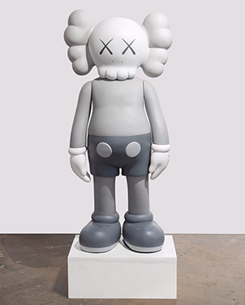
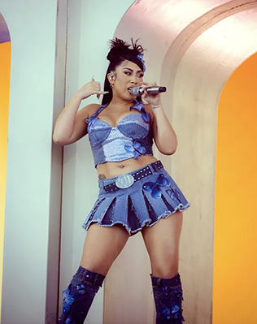
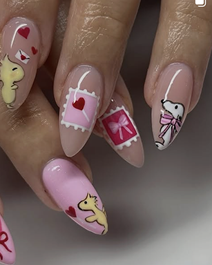

Andrea Ochoa
My Inspirations
KAWS (Brian Donnelly)

Kaws is an American Designer and artist from the east coast who become popular for his distinct recurring
characters that always feature "X" on their eyes. I visited his exhibit at SFMoma yesterday and what I found
inspiring is his ability to create his own unique brand that can translate to other mediums like clothes,
sculptures, painting, and even toys. The simplicity of his intricate lines, colorful but cohesive pairings
is what speaks to me.
Kali Uchis

Kali Uchis is a Columbian-American singer and song writer who sings in both English and Spanish. What inspires
me about Kali is her ability to blend two languages seamlessly and being outspoken about her political views.
She stays true to her community and uses multiple platforms to speak about injustices. She uses her social media
AND she does it during her concerts to reach her audience.
Nail Art

Nailzkatkat is just one of the many nail art accounts I see on my Instagram feed. My inspiration and creativity
sparks when I see new nail art. Lately doing my own nails has been a creative outlet for myself and I admire the
talent and skills of all nail artists because it requires a ton of precision, patience, and time.